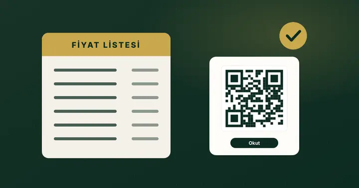
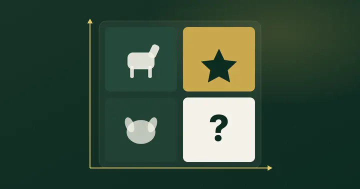

QR Menu Official Blog
Restoranınızı yöneten kararlar için net rehberler.
QR menüden menü mühendisliğine, garson çağrısından fiyat listesi kurallarına: restoran ve kafe sahipleri için doğrudan cevaplar ve uygulanabilir kontrol listeleri.
Son yazılar

Karekodla Fiyat Listesi: Restoran ve Kafeler İçin Yönetmelik Rehberi
2025 değişikliğiyle masadaki fiyat listesi karekodla gösterilebilir hale geldi. Ama 'sadece QR' yeterli değil: misafir isterse fiziki listeyi göstermeniz gerekiyor. Yazıyı oku
Menü Mühendisliği Nedir? Restoran Menüsünde Kârlılık Analizi
Çok satan ürün her zaman en çok kazandıran ürün değildir. Menü mühendisliği, her ürünü satış adedi ve tabak başına katkısıyla birlikte okumanın yöntemidir. Yazıyı oku
Dijital Menü Nasıl Hazırlanır? Kafe ve Restoranlar İçin Adım Adım
İyi bir dijital menü, basılı menünün telefona taşınmış hali değildir. Kategori sırasından ürün açıklamasına kadar küçük kararlar, misafirin menüde ne kadar rahat gezindiğini belirler. Yazıyı oku
Garson Çağırma Sistemi: QR ile Masadan Servis Talebi Nasıl Yönetilir?
Yoğun saatte el kaldıran misafiri fark etmek zordur. QR tabanlı çağrı, talebi masa bilgisiyle bir ekrana düşürür; ama asıl işi o ekranı kimin, nasıl izlediği belirler. Yazıyı okuBu kategoride henüz başka yazı yok.
Çözümler
Yazılardaki işleri panelden yapın
Demo
Okuduklarınızı kendi menünüzde düşünün.
Temel, Pro ve Plus paketlerinin demo menülerini telefonunuzda açın; sorularınız için bize ulaşın.